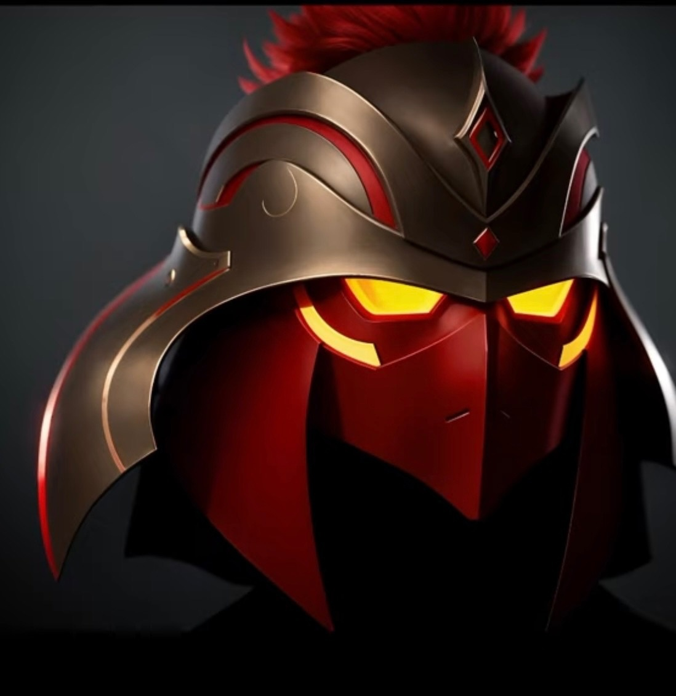
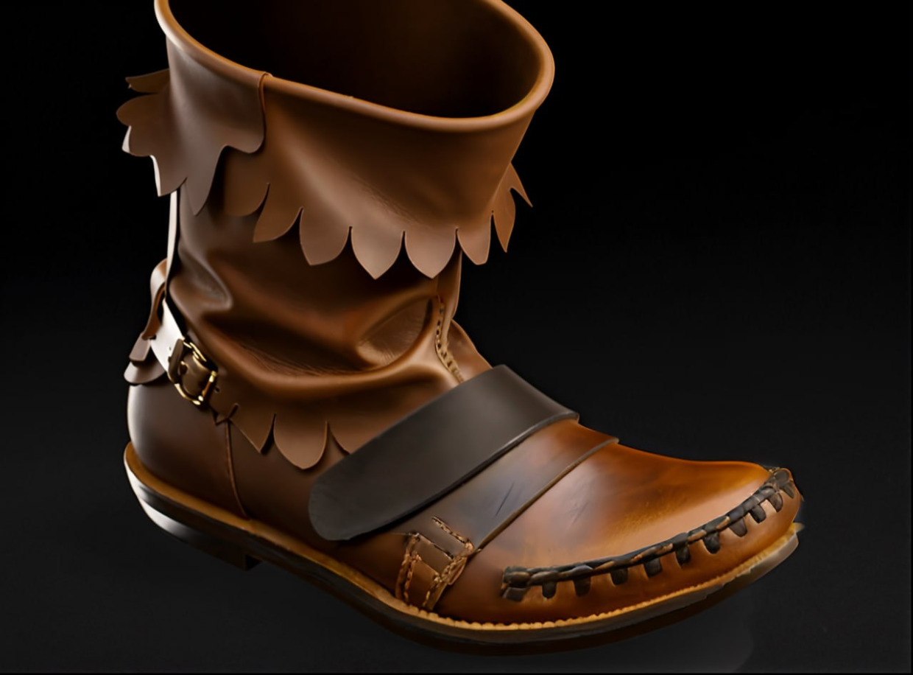
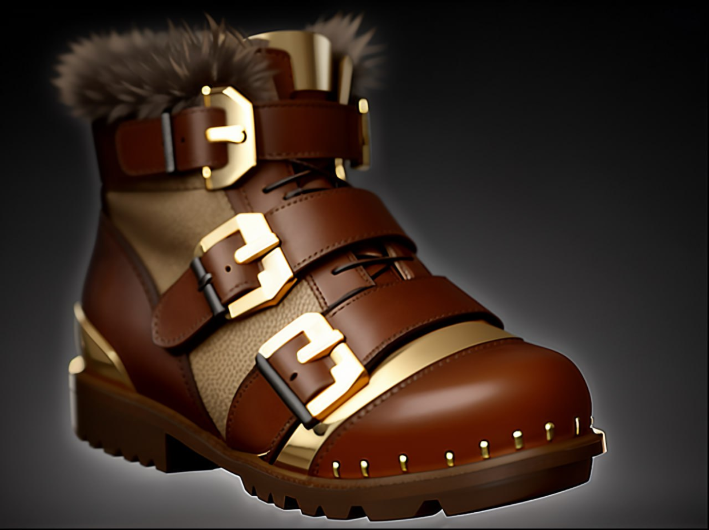

Masks

Mask of Madness
NEW
Активируемая: Berserk.
Даёт владельцу 110 скорости атаки и 30 скорости передвижения, но уменьшает его броню на 8 и запрещает ему применять способности. Действует 6 сек.
Доп. скорость атаки: 110
Доп. скорость передвижения: 30
Снижение брони: 8
Длительность: 6
Пассивная: Lifesteal.
Наделяет атаки владельца вампиризмом, отчего они восстанавливают здоровье в размере доли от нанесённого урона. Вампиризм от крипов слабее на 40%.
Вампиризм: 24%
Вампиризм от крипов: 14,4%
+20 к урону
+24 к вампиризму

Helm of the Dominator
Активируемая: Dominate.
Даёт контроль над нейтральным крипом, не являющимся древним, и увеличивает его скорость передвижения до 380, а запас здоровья — до 1000. Также даёт крипу +25 к базовому урону, +12 к восстановлению здоровья, +4 к восстановлению маны и +4 к броне.
Если максимальное здоровье существа больше 1500, оно не изменится. За убийство существа даётся 100 золота.
Дальность применения: 700
Максимум юнитов: 1
Минимальное базовое здоровье: 1000
Установленная скорость передвижения: 380
Установленная награда: 100
Бонус к базовому урону от атаки: 25
Бонус к регенерации здоровья: 12
Бонус к регенерации маны: 4
Бонус к броне: 4
+6 ко всем атрибутам
+6 к броне
+6 к восстановлению здоровья
Vladmir's Offering
Пассивная: Vladmir's Aura.
Увеличивает вампиризм союзников на 20%, их урон на 18%, броню на 4 и восстановление маны на 1,75. Вампиризм от крипов слабее на 40%.
Радиус: 1200
Вампиризм: 20%
Вампиризм от крипов: 12%
Бонус к регенерации маны: 1,75
Бонус к урону: 18%
Бонус к броне: 4
Длительность задержки ауры: 0,5
Boots

Boots of Speed
+45 к скорости передвижения

Power Treads
Активируемая: Switch Attribute.
Меняет атрибут, который получает бонус: +10 к силе, ловкости или интеллекту.
Бонус к выбранному атрибуту: 10
+45 к скорости передвижения героям дальнего боя
+55 к скорости передвижения героям ближнего боя
+10 к выбранному атрибуту
+25 к скорости атаки